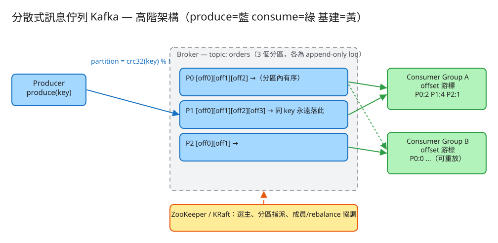

H 基礎設施 建議 50 分鐘 Design a Distributed Message Queue (Kafka)
produce(topic, key, value) 寫入訊息；消費者 poll / commit 拉取並推進進度。partition = hash(key) % N 把同 key 釘在同一分區即可。
| 指標 | 假設 | 推算 |
|---|---|---|
| 寫入吞吐 | 1M msg/s，每筆 1 KB | ~1 GB/s 寫入 → 必須順序寫 + 多分區分攤 |
| 分區數 | 單分區 ~10 MB/s 安全吞吐 | 1 GB/s ÷ 10 MB/s ≈ 100 分區（再留餘裕） |
| 保留期（retention） | 保留 7 天 | 1 GB/s × 86400 × 7 ≈ ~600 TB（含副本 ×3 ≈ 1.8 PB） |
| 消費者並行度 | 一分區只能被同組一個 consumer 讀 | 組內 consumer 數 ≤ 分區數 → 想更並行就加分區 |
| 磁碟 | 順序 I/O | HDD 順序寫即可達標，成本低；靠 page cache 吃讀 |
# 生產（依 key 決定分區，回傳落點 partition 與 offset）
POST /produce
Body: { "topic": "orders", "key": "user-42", "value": { "amount": 100 } }
→ 200 { "partition": 1, "offset": 37 }
# 消費：poll 拉取「committed offset 之後」的新訊息（不自動 commit）
POST /poll Body: { "group": "billing", "topic": "orders", "max": 100 }
→ 200 { "messages": [ { "partition":1,"offset":37,"key":"user-42","value":{...} }, ... ] }
# 提交進度：處理完才 commit（at-least-once 的關鍵順序）
POST /commit Body: { "group":"billing","topic":"orders","offsets": {"1": 38} }
# 重放：把某 group 的 offset seek 回指定位移（0 = 從頭）
POST /seek Body: { "group":"billing","topic":"orders","to": 0 }topic
name 主題名
partitions N（分區數，建立時定）
partition log（每分區一個 append-only 檔，offset 從 0 單調遞增）
offset 0 : { key, value, ts }
offset 1 : { key, value, ts }
... ← 只 append、不可改；保留期到才整段刪（segment）
consumer group offset 表（消費進度，與訊息分離儲存）
(group, topic, partition) → committed offset
例： (billing, orders, 1) → 38 表示分區1已消費到 offset 37，下一筆從 38 起
✏️ 用 Excalidraw 開啟編輯（diagram.excalidraw） ┌──────────── Broker（topic = orders, 3 分區）────────────┐
Producer ──hash(key)│ P0: [o0][o1][o2]... │
produce ─────────▶│ P1: [o0][o1][o2][o3]... ← 同 key 永遠落同分區 │
│ P2: [o0][o1]... │
└──────────┬───────────────────────┬─────────────────────┘
│ │
Consumer Group A │ Consumer Group B（各自有 offset 游標）
(P0:off=2,P1:off=4,...) (P0:off=0,... ← 可重放)
│
ZooKeeper / KRaft （黃：協調、選主、分區指派、成員變更）hash(key) % N 選分區，把訊息送到對應分區的 leader。partition = crc32(key) % N（Kafka 用 murmur2，原理相同）。同一個 key 永遠算出同一分區 → 同一實體的訊息全部進同一條 log。無 key 時走 sticky/round-robin 求負載均衡。
單一分區是嚴格 FIFO，offset 遞增即時間序。但跨分區沒有全域順序 —— P0 的 offset 5 與 P1 的 offset 5 之間沒有先後關係。所以「同一訂單的事件要有序」就把 order_id 當 key；「全部訂單要有序」則只能單分區（罕見且傷吞吐）。
每個 (group, topic, partition) 各記一個 committed offset。poll 回傳該 offset 之後的訊息，處理完 commit 推進。把 offset 存在 broker 端（Kafka 用內部 topic __consumer_offsets），消費者重啟後能接著讀。
一個組內多個 consumer 時，分區要指派給 consumer，且 一個分區同一時間只能被組內一個 consumer 消費（保有序）。consumer 加入/離開（或心跳逾時）會觸發 rebalance 重新指派。常見策略：
例：3 分區、2 consumer，range → c1:[0,1] c2:[2]；3 分區、3 consumer，round-robin → c1:[0] c2:[1] c3:[2]。Demo 的 assign() 實作了這兩種。
每分區可有多副本：1 個 leader 收發、followers 同步。ISR（In-Sync Replicas）= 與 leader 保持同步的副本集合。acks=all 時訊息要寫進所有 ISR 才算成功，leader 掛了從 ISR 選新 leader → 不丟資料。Demo 為單機，不做副本（誠實聲明）。
因為訊息持久在 log、offset 只是書籤，把某 group 的 offset seek 回 0（或任意位移）即可重新消費全部歷史。用途：新消費者回填、修 bug 後重跑、重建下游狀態。Demo 的 /api/seek 即此。
| 瓶頸 | 成因 | 對策 |
|---|---|---|
| 單分區吞吐到頂 | 一分區只能順序寫一條 log、只能被組內一人消費 | 加分區提升並行（同時提高生產與消費並行度） |
| 熱點分區 | 某 key（如某大客戶）流量遠超其他 → 該分區過載、有序消費塞車 | 改 key 設計（加隨機後綴打散，但犧牲該維度有序）；或熱 key 單獨 topic |
| 消費者落後（lag） | 消費速度 < 生產速度，lag = logEnd − committed 持續變大 | 加 consumer（≤ 分區數）、優化處理、批次；監控 lag 告警 |
| 儲存爆量 | 高吞吐 × 長保留 | 設 retention（時間/大小）、壓縮（compaction 保留每 key 最新）、分層儲存到物件儲存 |
| rebalance 風暴 | 成員頻繁進出 → 反覆重指派、消費暫停 | 調心跳/session 逾時、用 cooperative/sticky rebalance 減少搬動 |
本題 demo 聚焦 MQ 的真實系統邏輯，用 PHP 內建伺服器即可跑：
src/Broker.php 核心：createTopic（設 N 分區）、produce（crc32(key)%N 路由 + 每分區單調遞增 offset，append 到該分區 log 檔）、poll/commit（消費者組 offset 表）、seek（replay）、assign（range / round-robin 指派）、groupStatus（含 lag）。所有寫入用 flock 保護併發。public/index.php 路由 + 測試頁：建 topic 設分區數、produce 看落在哪分區、依 group 消費看 offset 前進、replay、看 rebalance 指派表。# 啟動
cd demo
php -S localhost:8025 -t public
# 瀏覽器開 http://localhost:8025
# 試：同一 key 連 produce 數次 → 落同分區、offset 0,1,2…；換 key → 可能落別分區